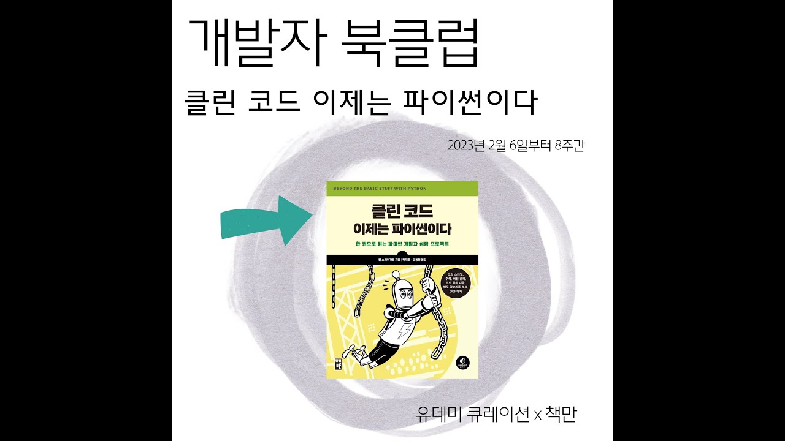

Beyond the Basic Stuff with Python [Introduction]

포스팅 계기
1) 클린 코드에 대한 고민
연구연수생 과정에서 프로젝트를 진행하며 코드 규칙에 대한 고민이 들었습니다.
학부 과정에서 팀 프로젝트를 진행할 때에는 코드의 품질보다는 구현에 집중하였고, 이 때문에 코드에 대한 기준이 없었습니다.
이 때문에 연구연수생 과정에서 코드의 품질을 높이기 위한 학습과 프로젝트 진행을 병행하다보니 처음 작성한 코드 기준과 마지막에 작성한 코드의 기준이 차이가 났습니다.
이를 겪으며 협업 과정에서 서로 규칙을 정하는 데 기준이 되는 것이 필요하다고 생각이 들었고, 우선은 나의 기준을 먼저 명확하게 세워야 다른 사람과 함께 규칙을 정하는 것이 가능할 것이라 생각이 들었습니다.
2) 개발자 북클럽 [클린 코드 이제는 파이썬이다]
채널 박재호 - https://www.youtube.com/@devjaypark
처음에는 많이 알려진 책인 Clean Code[로버트 C. 마틴]의 책을 통해 학습을 진행하려 했지만 Java 언어를 기반으로 작성된 책이라 고민이 있었습니다. 그러던 중에 유데미 큐레이션 x 책만이 진행하는 [클린 코드 이제는 파이썬이다] 개발자 북클럽에 참가하게 되었습니다. Clean Code 도서의 역자를 맡으신 박재호 개발자님이 번역한 도서이고 이번 북클럽의 멘토로 참여하여 질의응답과 학습 가이드를 제공해 주기 때문에 집중을 할 수 있을 것이라 생각하여 선택하게 되었습니다.
마치며…
블로그에 리뷰하는 내용은 [Beyond the Basic Stuff with Python]의 내용을 기반으로 작성할 예정입니다.
상세한 내용은 [클린 코드 이제는 파이썬이다] 도서를 통해 학습하기를 추천합니다.
Reference
[Beyond the Basic Stuff with Python_Al Sweigart] - [https://inventwithpython.com/beyond/
CC License - [CC BY-NC-SA 3.0]
댓글남기기